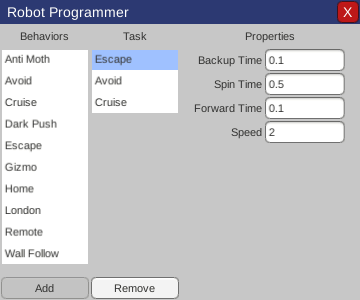

Welcome to BSim! BSim is simple robot simulator for learning and experimenting with behavior-based programming techniques. BSim is a companion learning tool to Robot Programming: A Practical Guide to Behavior-Based Robotics by Joseph L. Jones and Daniel Roth.
Using BSim
BSim simulates a simple flat world containing lights, walls, and pushable objects along with a programmable robot. You can choose from multiple preconfigured simulations to explore specific principles of behavior-based robotics or you can build your own.
Simulations
Select from any of the prebuilt simulations using the dropdown at the top of the left panel:
- Empty: An empty world with a single robot that can be controlled using arrow keys on the keyboard.
- Collection: Watch the robot attempt to collect the pucks to the light source.
- Gizmo: "Bright light! Bright light!" The robot will drive towards the light until it gets too bright using a proportional controller. Experiment with the effects of latency and the gain parameter on the Gizmo behavior.
- London: Who knew navigating around the block could be so difficult? See the effects of real world noise on robot navigation.
- Ball Pit: Watch the robot push merrily through a world full of balls (pucks).
Run a simulation
You can run a simulation using the buttons just below the simulated world:
- Start: Start running the current simulation.
- Stop: Stop the simulation.
- Step: Step one time step forward in the current simulation.
- Reset: Reset the current simulation to its initial state.
Simulation settings
You can alter the behavior of the current simulation using various settings shown on the left panel:
- Fantasy Mode: Enabling Fantasy Mode removes all noise from the robot's movements. Disabling Fantasy Mode adds random noise to the robot's movements to simulate slippage, uneven terrain, etc.
- Latency: The amount of time it takes for the robot to register a sensor reading.
Modify the world
You can tap objects in the simulated world to select them. When an object is selected, it will have a light blue color. You can drag objects to different locations.
Press the Delete key to delete a selected object.
You can also add objects to the world by tapping anywhere on the world. Select which type of object you want to add to the world using the lower dropdown on the left pane. To add a Wall, select Wall from the drop down, and then click and drag on the world to position the Wall.
Program the robot
To program a robot, tap on the robot to select it. Then tap on the Program Robot button on the right-hand pane to bring up the Robot Programmer dialog. Alternatively, just double-tap on the robot.

The Behaviors column shows the set of available behaviors that can be added to the robot's programmable Task. To add a behavior to the robot's Task, select a behavior in the Behaviors list and then tap Add.
The Task column shows the ordered behaviors that make up the robot's programmed Task. The order of the behaviors in the Task determine their execution priority from highest to lowest priority. To remove a behavior from the robot's Task, select the behavior you want to remove in the Task column and then tap Remove.
Selecting a behavior in the Task column will bring up the Properties pane for that behavior. Each behavior has properties that you can configure.
Changes to the robot's programmed Task are applied immediately. When you're done programming the robot, close the dialog.
Robot behaviors
Each robot has a built-in set of behaviors that you can select from and configure to program the robot's Task. Each behavior has behavior-specific properties that you can configure.
Anti-Moth
The Anti-Moth behavior triggers when the total light intensity measured by the robot's light sensors exceeds its Light Level parameter, causing the robot to turn away from the light by spinning a random amount to the left or right.
- Light Level: The average light level registered by the robot's light sensors above which triggers the robot to spin away from the light. Default: 1
- Speed: The speed the robot performs the behavior movements. Default: 2
Avoid
The Avoid behavior (give a positive Gain parameter) moves the robot forward and left if the right proximity sensor is on, or forward and right if the left proximity sensor is on. This tends to make the robot avoid obstacles. If Gain is negative, the robot turns towards obstacles. The magnitude of the Gain determines how tightly the robot arcs.
- Gain: Determines how much and in which direction the robot arcs to avoid (or seek) obstacles. A Gain of 1 or -1 will cause the robot to pivot in place. Default: 1
- Speed: The speed the robot performs the behavior movements. Default: 2
Cruise
The Cruise behavior drives the robot wheels at the specified speeds.
- Left Wheel: The left wheel speed. Default: 2
- Right Wheel: The right wheel speed. Default: 2
Dark Push
The Dark Push behavior backs up and spins away whenever the robot pushes an object when no light is visible.
- Light Level: The average light level registered by the robot's light sensors below which triggers the robot to backup and spin away when pushing an object. Default: 0
- Backup Time: The amount of time the robot backs up. Default: 0.1s
- Spin Time: The amount of time the robot spins after backing up. Default: 0.5s
- Forward Time: The amount of time the robot goes forward after backing up and spinning. Default: 0.1s
- Speed: The speed the robot performs the behavior movements. Default: 2
Escape
The Escape behavior triggers whenever the robot bumps into an obstacle, causing the robot to backup, spin, and go forwards.
- Backup Time: The amount of time the robot backs up. Default: 0.1s
- Spin Time: The amount of time the robot spins after backing up. Default: 0.5s
- Forward Time: The amount of time the robot goes forward after backing up and spinning. Default: 0.1s
- Speed: The speed the robot performs the behavior movements. Default: 2
Gizmo
Named after the light-phobic fuzzy critter with the same name, the Gizmo behavior uses a proportional controller to attempt to position the robot such that the average of its light sensor values equals the specified Light Level. If the light is too dark, the robot drives forwards. If the light is too bright, the robot drives backwards.
- Target Light: The target average light level registered by the robot's light sensors. Default: 0.5
- Gain: The gain parameter for the proportional controller. Default: 1
- Error Tolerance: The acceptable margin for error from the target light level below which this behavior no longer triggers. Default: 0.001
- Speed: The speed the robot performs the behavior movements. Default: 2
Home
The Home behavior drives the the robot towards a light source.
- Light Min: The average light level registered by the robot's light sensors above which triggers this behavior. Default: 0.1
- Gain: The gain parameter for how strongly the robot arcs towards the light. Default: 10
- Speed: The speed the robot performs the behavior movements. Default: 2
London
The London behavior drives the robot in a square path.
- Length: The length of the side of the square path. Default: 8
- Fixed Time Step: The amount of time in each simulated time step, used to calculate precise turns. Default: 0.02s
- Speed: The speed the robot performs the behavior movements. Default: 2
Remote
A behavior for controlling the robot using the keyboard arrow keys.
- Speed: The speed the robot performs the behavior movements. Default: 2
Wall Follow
The Wall Following behavior uses the robot's proximity sensors to follow a wall.
- Wall Lost: The length of time after not detecting the wall that the robot gives up on following the wall. Default: 1s
- Gain: The gain parameter for how strongly the robot arcs towards the wall. Default: 1
- Speed: The speed the robot performs the behavior movements. Default: 2
Robot sensors
The sensor values for the last selected robot are displayed on the top of the right panel. Each robot has two forward facing light sensors, two short-range proximity sensors, a force-sensitive bump sensor, and wheel odometers. You can also see which robot behavior is currently executing.
- Left light: The value of the left light sensor.
- Right light: The value of the right light sensor.
- Left proximity: Detects if something is in range of the left proximity sensor.
- Right proximity: Detects if something is in range of the right proximity sensor.
- Bumper force: The force exerted on the bumper sensor.
- Bumping: True if bumping into an immovable object.
- Pushing: True if pushing an object.
- Left wheel speed: The speed of the left wheel.
- Right wheel speed: The speed of the right wheel.
- Behavior: The currently executing behavior.